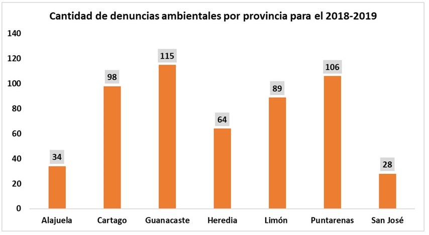

Cantida de denuncias reportadas por provincia
Para el periodo 2018-2019 se reportaron 534 denuncias ambientales, están se dividieron en las siete provincias. Guanacaste y Puntarenas son las provincias con más denuncias interpuestas.
Cantidad de denuncias ambientales por provincia para el periodo 2018-2019
| |  |